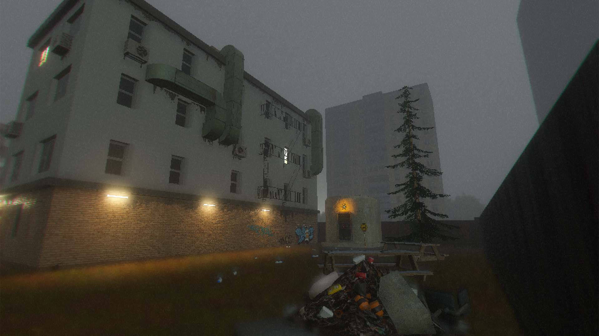
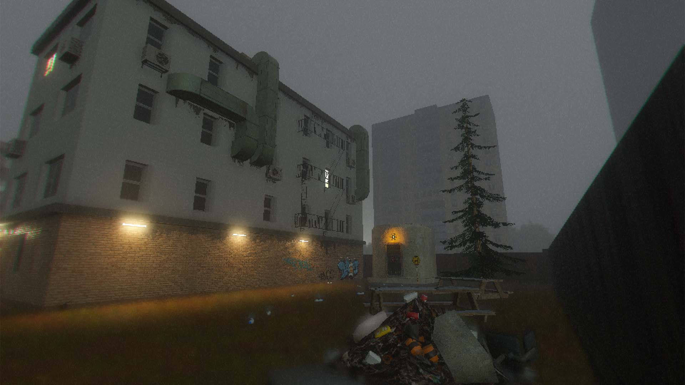
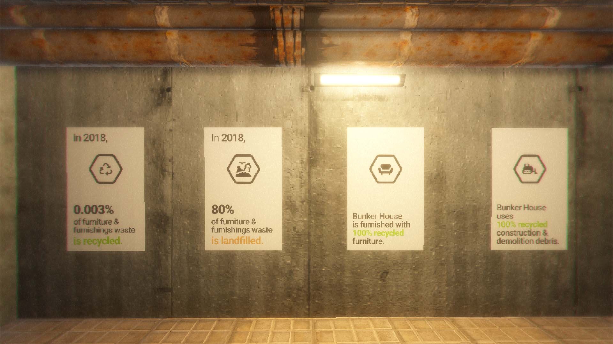
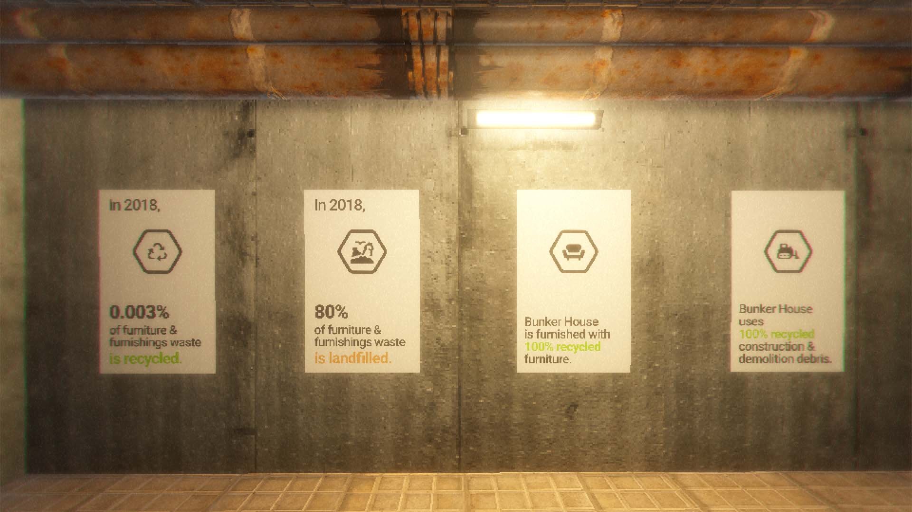
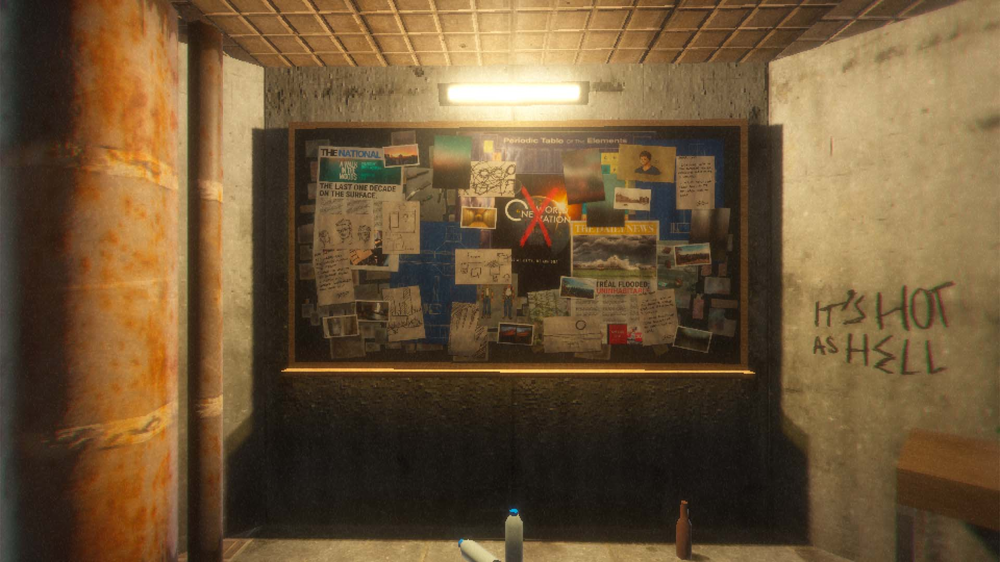
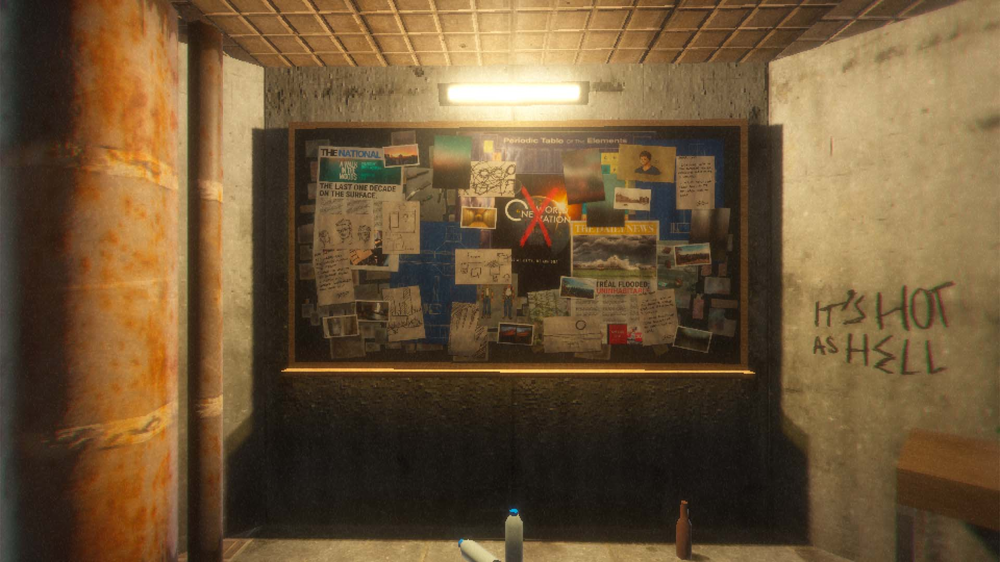
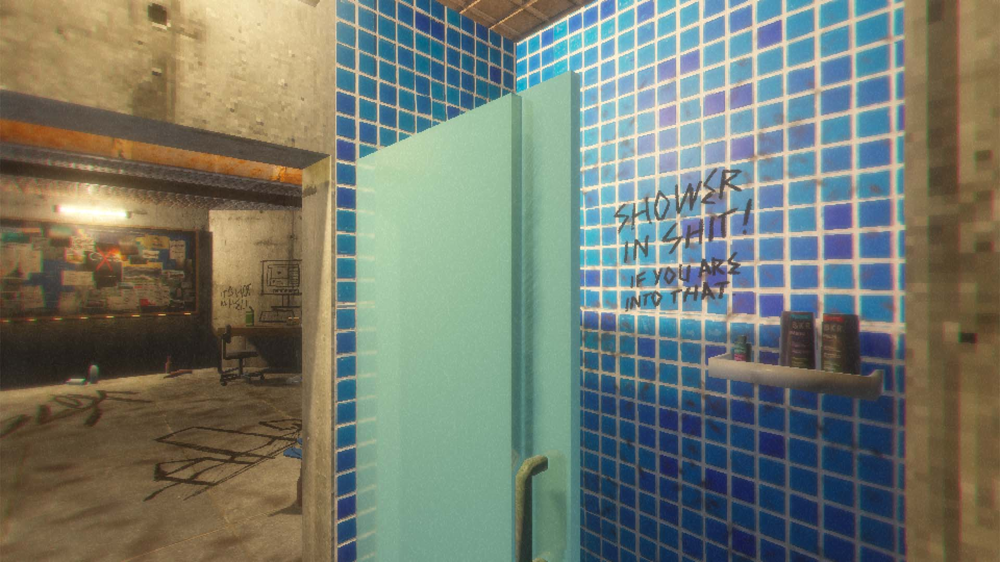
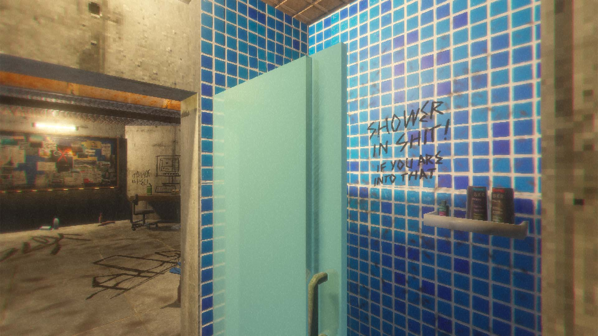

Cover
The Bunker House is a video game that uses visual and auditory storytelling to invite participants to an underground home centered around sustainable practices. From investigating materials and textures where the artist inhabits to recreating the materiality of everyday surfaces and objects in their worn and rusty form. It attempts to criticize current ways of living and speculate on less materialist futures.
 

 


In the near future, climate change has changed how we live. The land of concrete and steel has been flooded by the continuously rising sea. In the wake of the flooding, The Bunker House is funded by private companies to provide a safe place for people to shelter.
 



The contrast between the ad posters and graffiti reveals the story of the previous resident and the untold truth of living in an isolated, underground bunker. Despite the promising features and taglines, nothing in the Bunker House seems to be effective.
 


In the prison which the human built for themselves to escape from the consequence of their actions, the resident of the Bunker House eventually lost his sanity. The call to live sustainably was made just too late.
This project was made in Godot and Blender with Adobe Photoshop.
It was created as a piece for the exhibition "2072: Mediated Materiality and Possible Futures", hosted in 4TH SPACE at Concordia University (Montreal, Canada) on December 7, 2021. To see the live stream, please visit https://www.youtube.com/watch?v=vb9Kh1rE4Us.